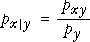
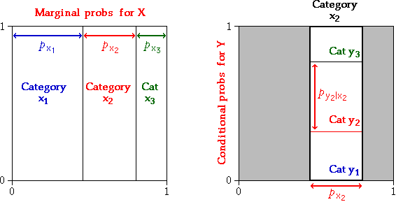

If you don't want to print now,
Data sets with two categorical variables
Bivariate categorical data sets are usually summarised with a contingency table.
For example, a study examined 62 patients who had been given a prescription medicine for some condition. Each patient was classified by whether they had complied with the treatment prescribed and by racial group:
| Race | Compliers | Non-compliers | Total |
|---|---|---|---|
| White | 13 | 10 | 23 |
| Non-white | 13 | 26 | 39 |
| Total | 26 | 36 | 62 |
Joint probabilities
Bivariate categorical data can be modelled as a random sample from an underlying population of pairs of categorical values. The population proportion for each pair (x, y) is denoted by pxy and is called the joint probability for (x, y).
In games of chance, we can often work out the joint probabilities. For example, if a gambler draws a card from a shuffled deck and also tosses a coin, there are eight possible combinations,
Since these are equally likely,
phead, heart = phead, club = ... = ptail, spade = 1/8 = 0.125
Interest in the model
In practice, we usually only have a random sample (summarised by a contingency table) and do not know the underlying joint probabilities. The sample proportions however provide estimates.

Probabilities for a single variable
A model for two categorical variables is characterised by the joint probabilities pxy.
The marginal probability, px, for a variable X is the proportion of (x, y) pairs in the population with X = x . This can be found by adding all joint probabilities for pairs with this x-value.

There is a similar formula for the marginal probabilities of the other variable,

Example
In the following example, the marginal probabilities for X are the row of totals under the table, and the marginal probabilities for Y are the column of totals on the right.
| Variable X | ||||
|---|---|---|---|---|
| Variable Y | X = A | X = B | X = C | Total |
| Y = 1 | 0.2576 | 0.1364 | 0.1212 | 0.5152 |
| Y = 2 | 0.0909 | 0.0758 | 0.0152 | 0.1818 |
| Y = 3 | 0.0455 | 0.0758 | 0.0606 | 0.1818 |
| Y = 4 | 0.0152 | 0.0303 | 0.0758 | 0.1212 |
| Total | 0.4091 | 0.3182 | 0.2727 | 1.0000 |
Probabilities in a sub-population
Conditional probabilities for Y, given X = x
The general definition of the conditional probabilities for Y given that the value of X is x is
They can be found by rescaling of that row of the table of joint probabilities (dividing by px) so that the row sums to 1.0.

Two sets of conditional probabilities
Conditional probabilities for X given that Y has the value y are defined in a similar way:

You should be careful to distinguish between px | y and py | x.
| The probability of being pregnant, given that a randomly selected person is female would be fairly small. The probability of being female, given that a person is pregnant is 1.0 !! |
Proportional Venn diagrams
A proportional Venn diagram is drawn from the marginal probabilities of one variable and the conditional probabilities for the other variable,

Rewriting the definition of conditional probabilities,

The area of any rectangle in the diagram therefore equals the joint probability of the categories it represents.
An alternative proportional Venn diagram can be drawn from the marginal probabilities of Y and the conditional probabilites of X given Y. The area for the rectangle corresponding to any (x, y) is its joint probability, pxy.
Example
The table below is based on the world population in 2002, categorised by region and by age group. It shows the joint probabilities for a randomly chosen person being in each age/region category.
| Age | |||
|---|---|---|---|
| 0-19 | 20-64 | 65+ | |
| Africa and Near East | 0.085 | 0.073 | 0.006 |
| Asia | 0.215 | 0.315 | 0.035 |
| America, Europe and Oceanea | 0.084 | 0.158 | 0.030 |
The two proportional Venn diagrams are shown below.

Note that the areas are the same in both diagrams — they are simply rearranged.
Marginal and conditional probs can be found from joint probs (and vice versa)
We have used three types of probability to describe a model for two categorical variables — the joint probabilities, the marginal probabilities for the two variables and the conditional probabilities for each variable given the value of the other variable. These sets of probabilities are closely related. Indeed, the model can be equivalently described by any of the following.
Each can be found from the others:

Bayes theorem
In particular, note that it is possible to obtain the conditional probabilities for X given Y, px | y, from the marginal probabilities of X, px, and the conditional probabilities for Y given X, py | x. This can be expressed in a single formula that is called Bayes Theorem, but it is easier in practice to do the calculations in two steps, obtaining the joint probabilities, pxy, in the first step. There are several important applications of Bayes Theorem.
Accuracy of medical diagnostic tests
There are two types of error in a test for a medical condition:
Consider a diagnostic test with
p negative | disease = 0.05 ppositive | no disease = 0.10
From these, we can also write
p positive | disease = 0.95 pnegative | no disease = 0.90
We will also assume that 10% of people who are given the test have the disease,
p disease = 0.10
From this information, we can find the probabilities of having the disease, given the result of the diagnostic test,